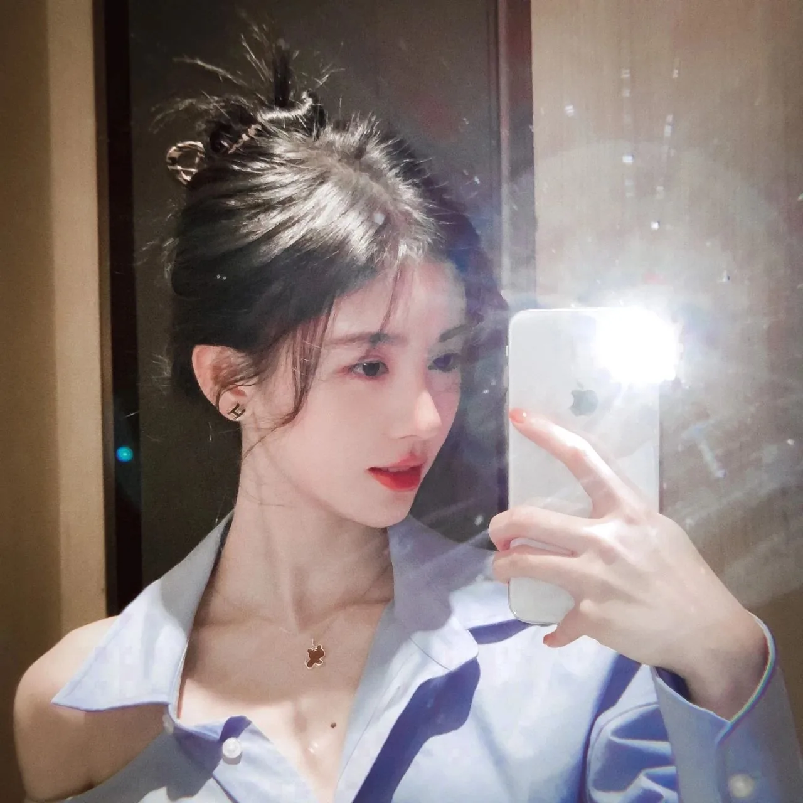
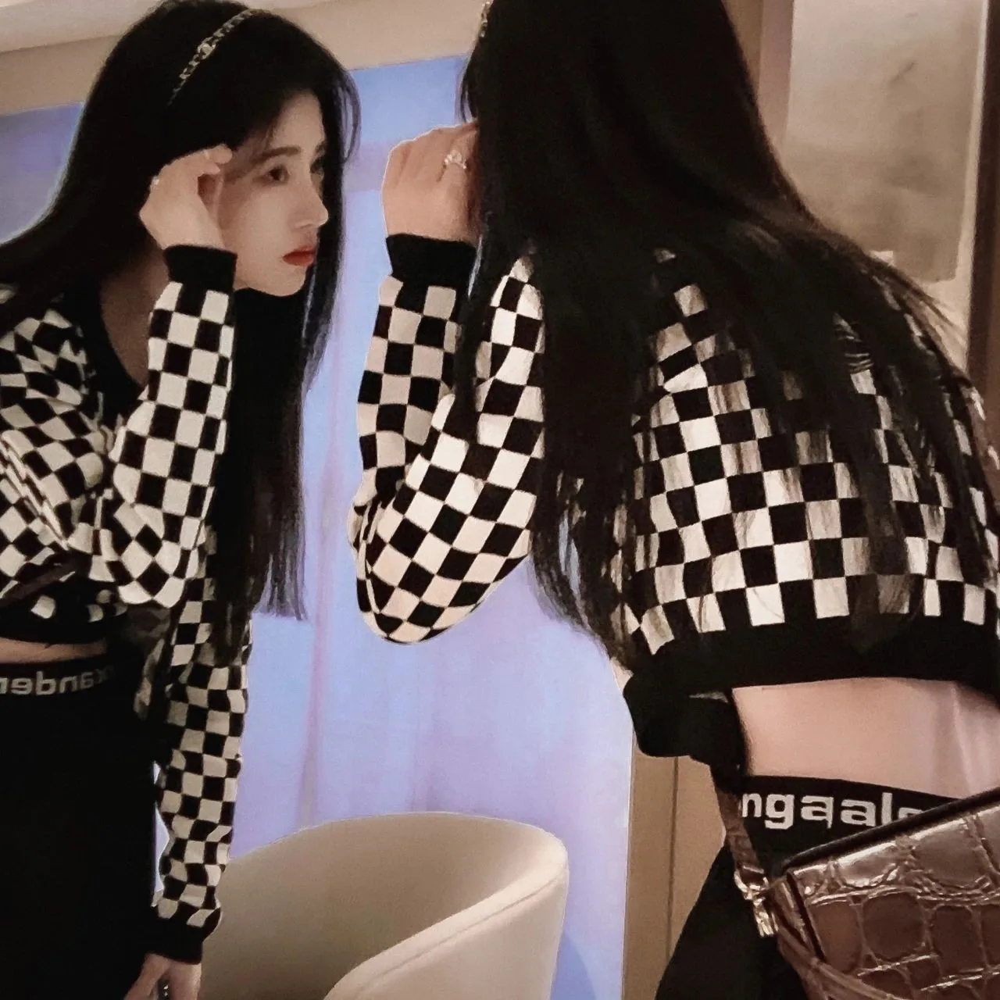
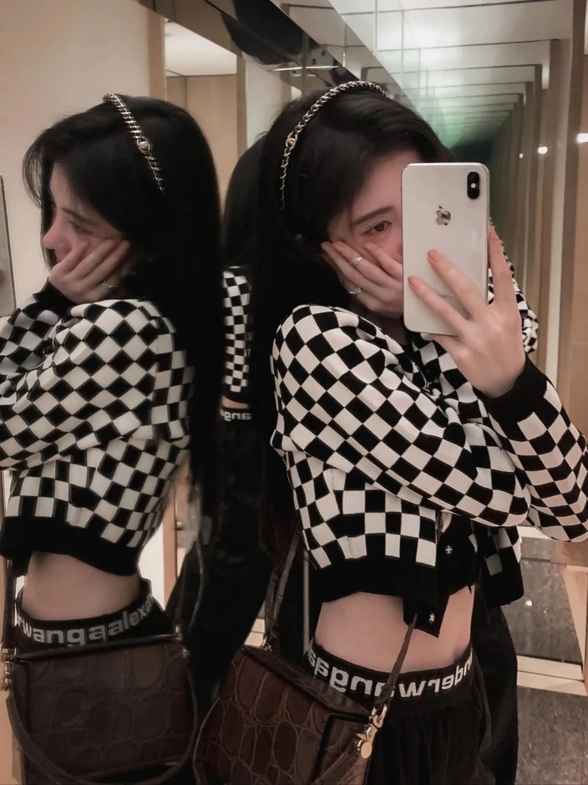
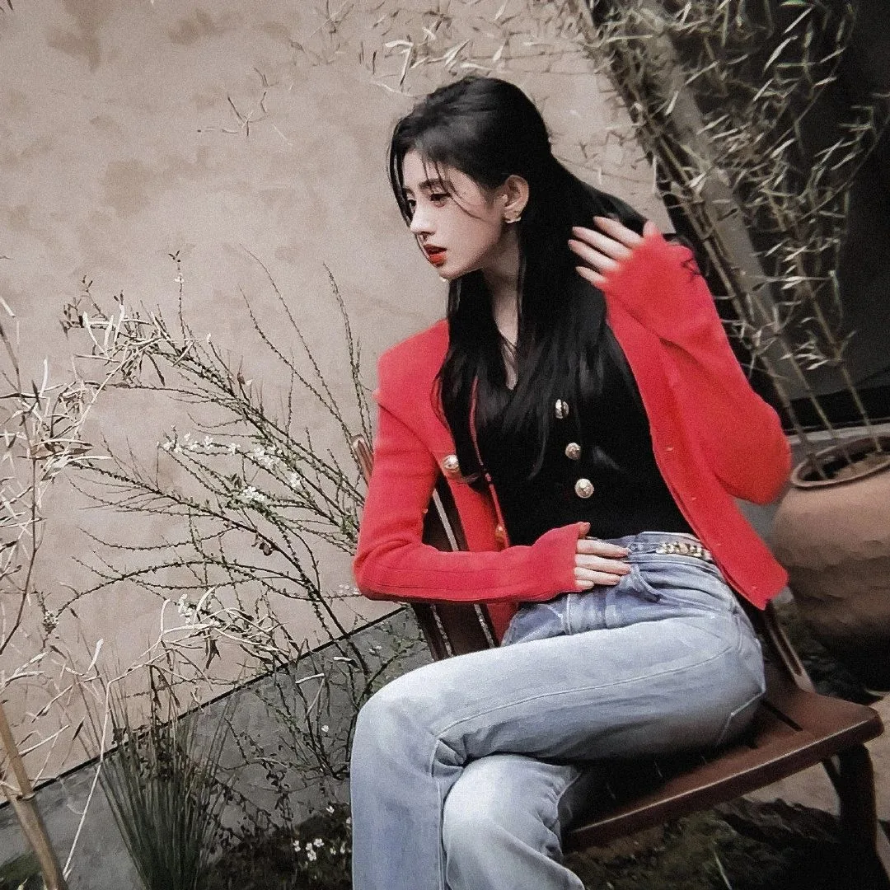
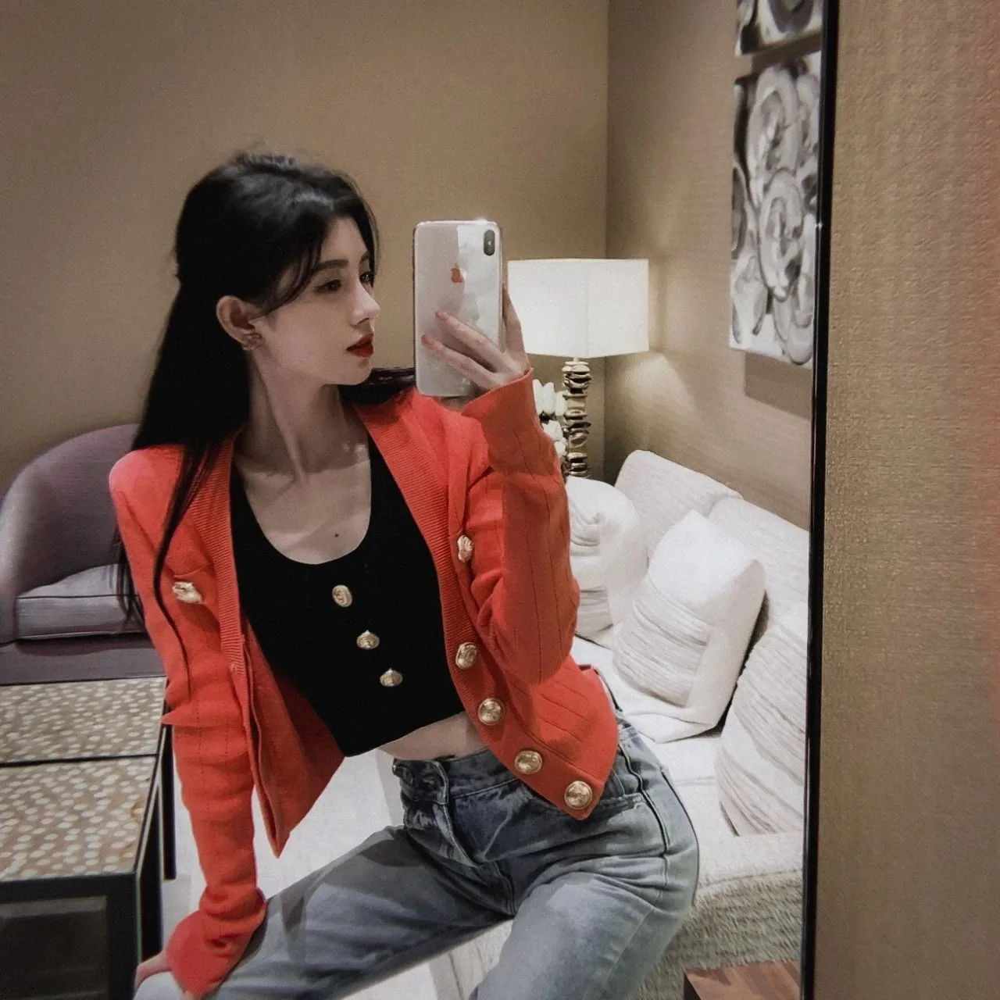
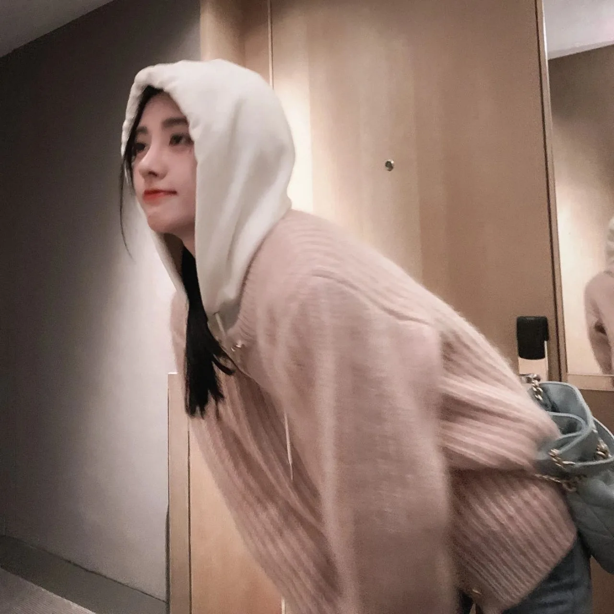
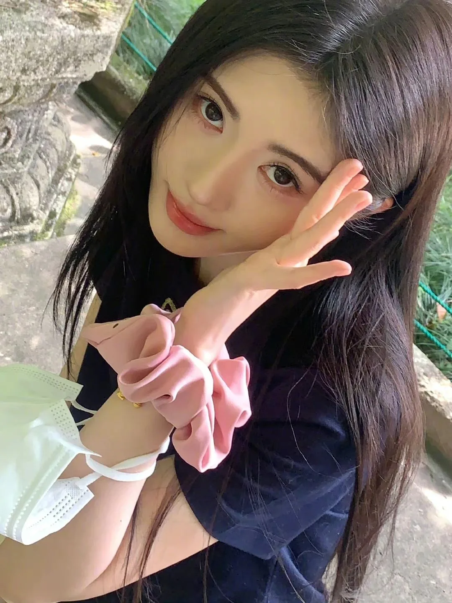
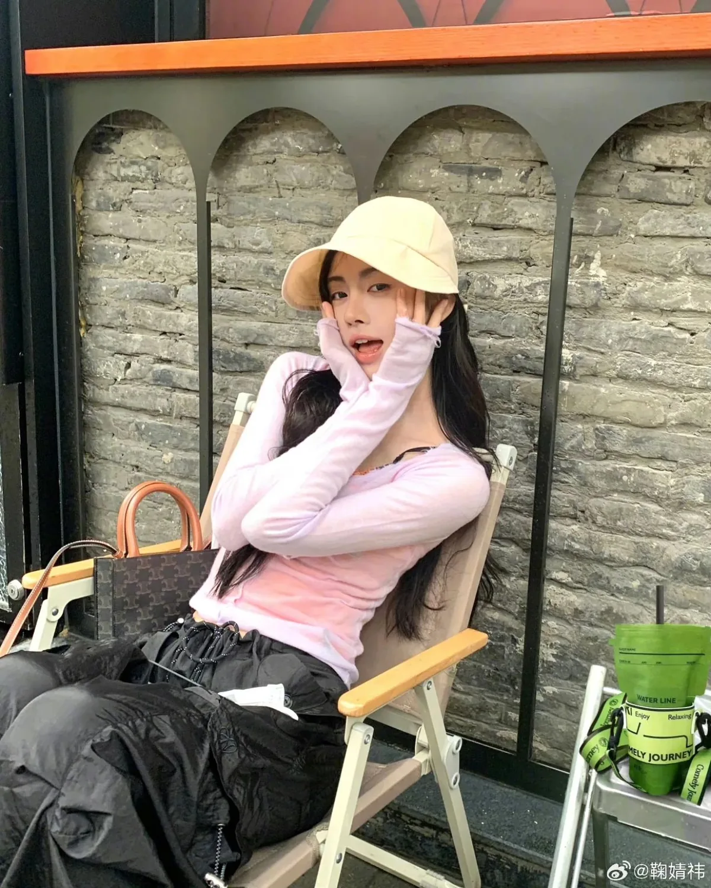
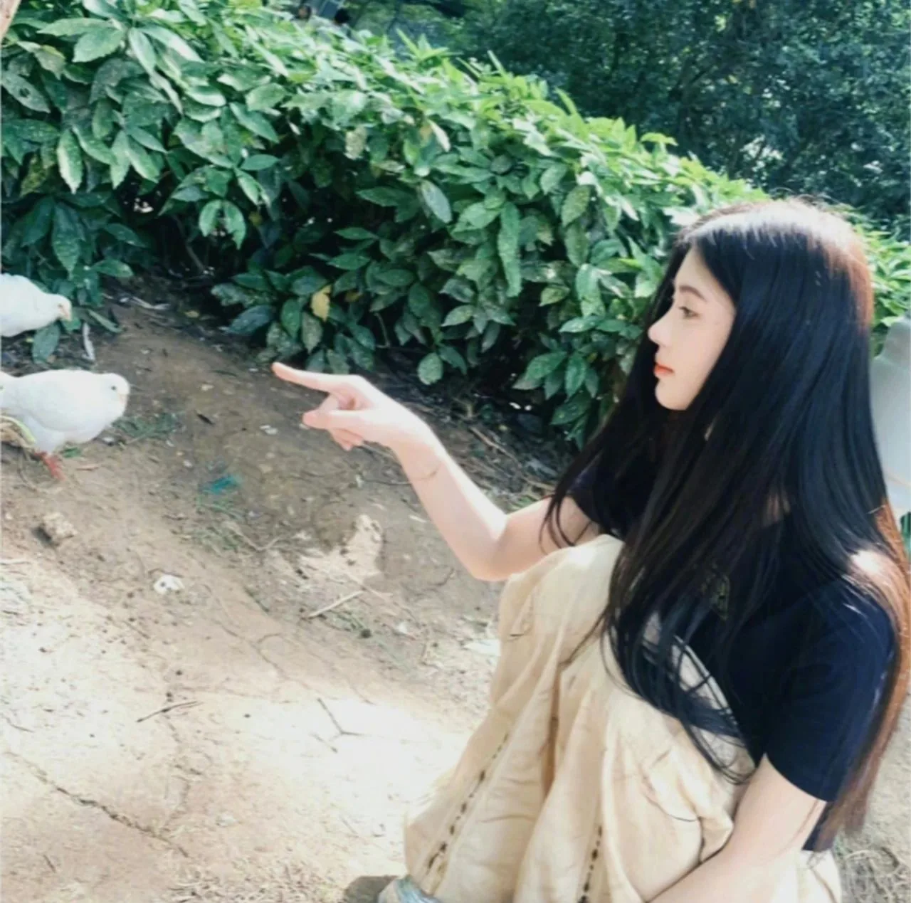
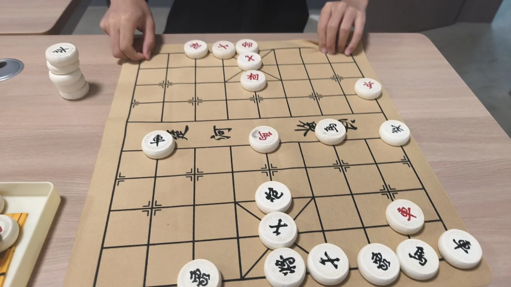

Light notes
拾光，
镜头之外的日常。
生活里顺手按下的光、表情和片刻。不追求参数，只留下当时的样子；点击或停留 1.5 秒可放大查看完整画面。
20SNAPSHOTS100%ORIGINAL RATIO2COLUMNS ON PHONE
01 / Daily archive
日常影像 · 全部保留原比例
手机随拍为主，全部按原始比例展示，不做裁切。









